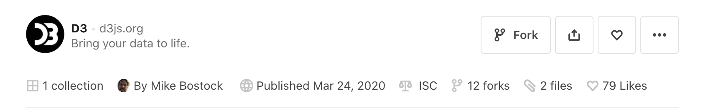

```{ojs}
athletes = FileAttachment("athletes.csv").csv({typed: true})
Plot.plot({
grid: true,
facet: {
data: athletes,
y: "sex"
},
marks: [
Plot.rectY(
athletes,
Plot.binX({y: "count"}, {x: "weight", fill: "sex"})
),
Plot.ruleY([0])
]
})
```Libraries
Overview
There are three types of library you’ll generally use with OJS:
Observable core libraries automatically available in every document.
Third-party JavaScript libraries from npm and ObservableHQ.
Custom libraries you and/or your colleagues have created
In this document we’ll provide a high-level overview of the core libraries and some examples of using third-party libraries (D3 and Arquero). Creating your own libraries is covered in the article on Code Reuse.
Stdlib
The Observable standard library provides the core capabilities that underlie rendering content and loading code and data. Some particularly important components of the standard library include:
| Component | Description |
|---|---|
| DOM | Dynamically creating DOM elements |
| FileAttachments | Reading files in a variety of formats |
| require | Importing third-party modules from NPM and GitHub |
You can find complete documentation for the standard library at https://github.com/observablehq/stdlib.
注解
Quarto always embeds a specific version of ObservableHQ’s runtime, which means that Quarto might be behind the very latest ObservableHQ version on their website. If you need to use the latest version of Plot (or other core libraries), you can use the import function to import the latest version directly from a CDN. For example:
Plot = import("https://esm.sh/@observablehq/plot")Inputs
The Observable inputs library provides widgets that can be bound to reactive expressions via the viewof keyword. Some particularly useful input include:
| Component | Description |
|---|---|
| Radio | Choose from mutually exclusive set of options |
| Checkbox | Choose one or more options from a list |
| Range | Slider for continuous numeric values |
| Select | Drop down select box |
| Table | Select one or more rows from a table |
You can find complete documentation for all of the inputs at https://github.com/observablehq/inputs.
Plot
Observable Plot is a JavaScript library for exploratory data visualization. Plot is built upon a set of core concepts (Marks, Scales, Transforms, and Facets) that can be composed together to create custom visualizations.
Here’s an example of a histogram of the weight of Olympic athletes created with Plot:
You can find complete documentation for Observable plot https://github.com/observablehq/plot.
D3
D3.js is a JavaScript library for manipulating documents based on data. D3 is capable of creating just about any interactive graphic you can imagine!
Here’s a zoomable sunburst diagram (originally published here) created with D3. Only two layers of the hierarchy are shown at a time. Click a node to zoom in, or the center to zoom out.
To use D3 in an {ojs} cell, first import it using the require function (which loads modules hosted at jsDelivr):
```{ojs}
d3 = require("d3@7")
```Then, use d3 as needed to create your visualization. For example, here are the first few lines of the cell that creates the visualization above:
```{ojs}
sunburst = {
const root = partition(flareData);
root.each(d => d.current = d);
const svg = d3.create("svg")
.attr("viewBox", [0, 0, width, width])
.style("font", "15px sans-serif");
// ...remainder of implementation
return svg.node();
}
```See the Sunburst example for the complete source code. To learn more about D3, visit https://d3js.org/.
Arquero
Arquero is a JavaScript library for query processing and transformation of array-backed data tables. Following the relational algebra and inspired by the design of dplyr, Arquero provides a fluent API for manipulating column-oriented data frames.
Here we’ll import Arquero (aq) and an alias to Arquero operations (op), read a dataset, then filter, aggregate, and view the data:
```{ojs}
import { aq, op } from '@uwdata/arquero'
penguins = aq.loadCSV("palmer-penguins.csv")
penguins
.groupby('species')
.filter(p => p.body_mass_g > 0)
.rollup({
count: op.count(),
avg_mass: op.average('body_mass_g')
})
.view()
```See the Arquero example for complete source code. To learn more about using Arquero, see the Introducing Arquero tutorial.
Modules
NPM
The require function in the standard library can be used to import npm modules (which are served from the jsDelivr CDN):
```{ojs}
d3 = require("d3")
topojson = require("topojson")
```Modules can optionally include an @ sign with a version. For example:
```{ojs}
d3 = require("d3@7")
```See the jsDelivr documentation for additional details. Note that the require function automatically prepends the prefix https://cdn.jsdelivr.net/npm/ when resolving imports, so where the jsDeliver documentation says to use this URL:
https://cdn.jsdelivr.net/npm/package@version/fileYou need only pass this to require:
package@version/fileObservableHQ
Notebooks published on http://observablehq.com can also be compiled and downloaded as JavaScript modules.
While notebooks often have their own embedded dataset, you can actually replace this data with your own when you import them! Returning to the sunburst example from above, here we import a notebook and use the with keyword to provide our own value for data:
```{ojs}
pdata = FileAttachment("population.json").json()
import { chart } with { pdata as data } from "@d3/zoomable-sunburst"
chart
```One important restriction to be aware of is that not all notebooks published on ObservableHQ have an open-source license. Notebooks need to explicitly tagged with a license as an indication that it’s okay to use them outside of ObservableHQ.
You can see the license for a notebook in its header area. For, example this notebook is tagged with the ISC license:

You should check the license of ObservableHQ notebooks before you import them. See the documentation on notebook licenses for additional details on how to do this.